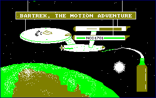
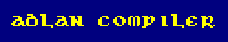

I used to develop software for the Amstrad CPC back in the mid-80s when I was a teenager. My largest and most successful project was the "Adlan" adventure game compiler ROM, which was published by Graduate Software, and reviewed in at least one magazine.
I wrote Adlan before I went to University and got to really understand how conventional compilers worked. It just reads tokens and emits Z80 machine code straight away, which made it fast, at least. It also means that the language is entirely in prefix notation -- there's no infix expression parser. That didn't matter much because you don't tend to do much arithmetic in an adventure game.
Adlan was a pretty cool project. It's all in Z80 assembler, compiled with the Arnor MAXAM assembler ROM. It's divided into files because it wouldn't all fit in memory.
The source code is for the ROM version. I think it can still generate a RAM version (which could be run from disk) with a bit of work.
comp_str), word lists (comp_words), code statements (comp_code), and expressions comp_exp) follows.comp_colour) and then has tables of all the compiler error messages and keywords.COMPRESS, ROMOFF, etc. It has the picture compression routine used to create the ".csc" files, which works by storing the differences between lines on the screen. It also contains the help text, and the fonts. The fonts were created using another program I wrote called "Charon".copying routine in the adlan4.sub file.There was a large user manual written using the Arnor PROTEXT word processor ROM. It was originally printed on an Epson dot matrix printer. I've converted the whole thing into HTML, but preserved pretty much all the original text as it was. There were a bunch of template source files distributed with Adlan, which are also here.
I was a pretty poor speller. The "unical" font should really have been "uncial". It was based on calligraphy example I found with an Osmiroid fountain pen.
Last but by no means least, my school friend and I spent a long time putting together an adventure game called "Bar Trek", a Star Trek spoof adventure. It was a lot of fun to do, and I still found it funny to play even after 13 years, probably because I still have a childish sense of humour. Writing Bar Trek was the real test case for Adlan, and was the reason why most of the features were developed. Here's the opening screen for Bar Trek, which kind of sets the tone for the rest of the game:

I drew this picture using my own Picgen program (another project) which I'll put on the web when I retreive it. I also discovered a pencil-drawn map of the game.
It's interesting to read what I thought about software when I was just 17:
The ADLAN compiler was designed, not as an adventure creating package, but as an adventure language. It is intended to be as flexible and open-ended as possible, and not to restrict the user to a fixed type or format of adventure. ADLAN was written in response to other packages which did exactly that. As a result, the presentation of an adventure written using ADLAN requires a little more thought from the user. However, with proper use of windows, control codes, character sets and graphics I believe the result will be of higher quality.
Any future versions of ADLAN-I will be upwardly compatable with this version.
There is no commission to pay if you want to market adventures written with ADLAN, after all, that is what a compiler is for! However, a mention of ADLAN on your title screen would be appreciated.
I hope you enjoy using ADLAN, and good luck.

Many thanks to Martyn Lycett for retrieving the contents of my old three inch Amstrad diskettes so that I could put this information together.
Copyright © 1999-2000 Richard Brooksby. You may make and distribute verbatim copies of this document provided that you retain as they appear all copyright and licence notices. You may not charge a fee for this document or for distributing this document. You may not make or distribute derivative works (modified versions) of this document without the express written permission of the copyright holder.
{kind=link}
{kind=link}